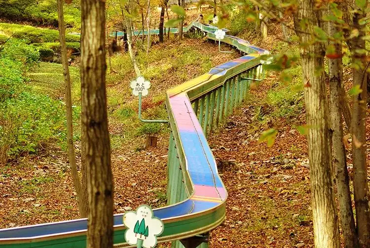

Ome, Tokyo: things to do, food and stays
Ome · Tokyo
Ome
Highlighted on the Tokyo map.

Sights
Dining
Ramen Itsuki Honten
らーめん いつ樹 本店

Noodle restaurant in Ome, Tokyo.
Kikuya
きくや

Noodle restaurant in Ome, Tokyo.
Tantan-men Sugiyama
担々麺 杉山

Noodle restaurant in Ome, Tokyo.
Tsukesoba-ya Menraku
つけそば屋 麺楽

Noodle restaurant in Ome, Tokyo.
Heso Manju Honpo
へそまんじゅう本舗

Noodle restaurant in Ome, Tokyo.
Kabe Taishoken
河辺大勝軒

Noodle restaurant in Ome, Tokyo.
Negishi Ya
根岸屋

Noodle restaurant in Ome, Tokyo.
Sawanoi Kikizake Dokoro
澤乃井 きき酒処

Izakaya or bar in Ome, Tokyo.
Sawanoi En Seiryu Garden
澤乃井園 清流ガーデン

Izakaya or bar in Ome, Tokyo.
Tamago Club
たまご倶楽部

Cafe in Ome, Tokyo.
Tofu Asobi Mameraku
とうふ遊び 豆らく

Restaurant in Ome, Tokyo.
Daimon
大門

Noodle restaurant in Ome, Tokyo.
Momiji Ya
紅葉屋

Noodle restaurant in Ome, Tokyo.
Hachinoko Shokudo
はちのこ食堂

Noodle restaurant in Ome, Tokyo.
Natsu e no Tobira
夏への扉

Cafe in Ome, Tokyo.
CAFE Shizuku
CAFE 雫

Cafe in Ome, Tokyo.
KATSURA

Noodle restaurant in Ome, Tokyo.
Kotaro Udon
幸太郎うどん

Noodle restaurant in Ome, Tokyo.
Umehama Tei
梅浜亭

Noodle restaurant in Ome, Tokyo.
Tohoen
東峯園

Noodle restaurant in Ome, Tokyo.
Sawanoi Mamagoto Ya
澤乃井ままごと屋

Japanese restaurant in Ome, Tokyo.
Kiri Yama
きり山

Noodle restaurant in Ome, Tokyo.
Koubai En
紅梅苑

Sweets and bakery shop in Ome, Tokyo.
Sushi Katsu
寿司勝

Seafood restaurant in Ome, Tokyo.
Misato Oume shinmachi ten
味里 青梅新町店

Izakaya or bar in Ome, Tokyo.
teutiudon inakaya Oume ten
手打ちうどん 田舎屋 青梅店

Noodle restaurant in Ome, Tokyo.
Miya Yoshi Oume kabe ten Reservation
宮よし 河辺店

Meat restaurant in Ome, Tokyo.
Chimoto Ya
千本屋

Noodle restaurant in Ome, Tokyo.
Kasugano
春日野

Noodle restaurant in Ome, Tokyo.
Ki no Ya
紀の家

Noodle restaurant in Ome, Tokyo.
Tonkatsu Taro
とんかつ太郎

Meat restaurant in Ome, Tokyo.
Teuchi Soba Waseiro
手打ち蕎麦 わせいろう

Noodle restaurant in Ome, Tokyo.
Teuchi Udon Tokiwa
手打うどんときわ

Noodle restaurant in Ome, Tokyo.
Rakuya Ya
楽家家

Chinese or Asian restaurant in Ome, Tokyo.
Hayabusa
隼

Japanese restaurant in Ome, Tokyo.
Komadori Shop
駒鳥売店

Noodle restaurant in Ome, Tokyo.
Stay
Kamenoi Hotel Ome
奥多摩 清流リゾート 亀の井ホテル 青梅

Kamenoi Hotel Ome is a resort hotel in Ome, Tokyo.